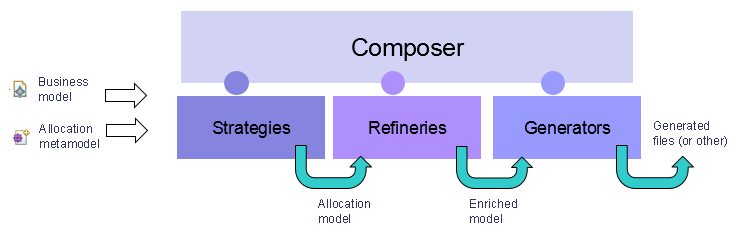
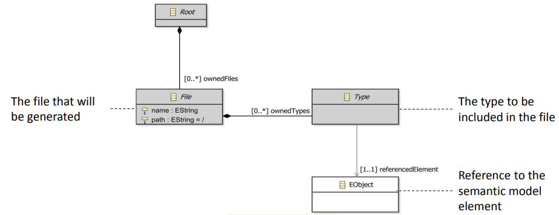

This project suggests doing to create code generation software, which will be extensible by the user easily. This software offers the bellow possibilities:
The generation can be launched:

Four concepts are introduced in this project:
Allocation metamodel: may be compared to a generation plan, it defines generation properties and refers to the semantic metamodel;
Strategy: a Strategy is an algorithm that produces an "Allocation model" from "One model / a set of Model Elements. Given a model or a set of elements, the allocation returns a "Root", containing a set of "Files" referencing a set of "Types". You can have multiple strategies for the same Allocations: they will represent different ways to organize the code in the files. You'll select the one that fits to your need and configure it
Refinery: Now that the one Strategy has produced the Allocation, we need to refine it. Refining the allocation is actually the process to Reorder elements in one file, add forward declarations, Identify the need to add "imports" or #includes. The refinery is here to satisfy all the constraints given by the strategy. You can have multiple strategies, but you'll have only one refiner generated language. The Refinery receives an Allocation, and it has to process and enrich it with all sort of details. Once the Refinery has done it's job, all the complex job has been done and we can apply all our generation pattenrs.The generation code is now very simple, no logic inside !You don't have any more to care about elements order, imports, etc.. Everything has already been decided.
Generators: Now that all the complex job has been done, we can delegate the generation to any technology : EGF, Acceleo, StringTemplate, Jet , Java ... The contract here is simply to do what has been written in the Allocation
Composer provides some Services allowing to call/manipulate it.
This metamodel is a generic metamodel, which defines the common concepts for all allocation metamodels. It defines several classes as Root, File and Type. Type refers to a semantic element, i.e. from the semantic model. An allocation metamodel can be compared to a generation plan. It defines the concept of file. a file has a name and a path and contains types. Each type refers to an element of the semantic model. An allocation metamodel may be extended with several concepts. This separation of concerns allows the developer to make very simple generation scripts without concern about complicated computation and complicated model browsing.

Provided by bundle:org.polarsys.kitalpha.composer.metamodel.allocation.base.model
File name: org.polarsys.kitalpha.composer.metamodel.allocation.base.*
This class allows launching programmatically a complete code generation.
Provided by bundle:org.polarsys.kitalpha.composer.core
File name: org.polarsys.kitalpha.composer.api.CodeManagerLauncher.java
This class allows getting Strategies, Refineries and Generators contributing at the Manager extensions points.
Provided by bundle:org.polarsys.kitalpha.composer.core
File name: org.polarsys.kitalpha.composer.api.CodeManagerRegistry.java
Composer is an Eclipse plug-in that defined four extension points:
Define a new EMF metamodel by inheriting the allocation metamodel one, and register it on the given extension point.
Provided by bundle:org.polarsys.kitalpha.composer.core
Extension point name: org.polarsys.kitalpha.composer.allocation.binding.
Contributing a binding to Composer is done through the following extension (in the bundle plugin.xml file):
<extension
point="org.polarsys.kitalpha.composer.allocation.binding">
<binding
Id="org.polarsys.kitalpha.composer.basic.allocation"
Name="A Basic Allocation Metamodel"
NsUri="http://my.allocation.metamodel.ns.uri"
Description="Description body text" >
<businessMetamodelNsUriDeclaration
NsUri="http://metamodel.business.ns.uri">
</businessMetamodelNsUriDeclaration>
<businessMetamodelNsUriDeclaration
NsUri="http://another.metamodel.business.ns.uri">
</businessMetamodelNsUriDeclaration>
</binding>
</extension>Binding Declaration Attributes:
id: The unique ID for the binding (mandatory)
name: The Name of the Workflow (mandatory)
description: A quick description for users (optional)
nsUri: The namespace URI of the allocation metamodel
Business Metamodel Declaration Attributes:
nsUri The namespace URI of the business metamodel (mandatory)
The strategy will allows to create an allocation model from a semantic model
Provided by bundle:org.polarsys.kitalpha.composer.core
Extension point name: org.polarsys.kitalpha.composer.allocation.strategies.
Contributing a strategy to Composer is done through the following extension (in the bundle plugin.xml file):
<extension
point="org.polarsys.kitalpha.composer.allocation.strategies">
<strategy
Class="org.polarsys.kitalpha.composer.example.MyStrategy"
Id="org.polarsys.kitalpha.composer.example.strategy"
Name="A simple Strategy"
NsUri="http://my.allocation.metamodel.ns.uri">
</strategy>
</extension>Strategy Declaration Attributes:
id: The ID of the Strategy. (mandatory)
name: The Name of the strategy. (mandatory)
description: A quick description for users.
nsUri: The namespace URI of the allocation metamodel where the strategy is applicable on.
class: A class that respects the contract of IStrategy. This class knows how to create an allocation model from a semantic model.
This interface specifies the contract for providing allocation strategy.
Provided by bundle:org.polarsys.kitalpha.composer.core
File name: org.polarsys.kitalpha.composer.extension.points.IStrategy.java
Provided by bundle:org.polarsys.kitalpha.composer.core
Extension point name: org.polarsys.kitalpha.composer.allocation.refineries.
Contributing a refinery to Composer is done through the following extension (in the bundle plugin.xml file):
<extension
point="org.polarsys.kitalpha.composer.allocation.refineries">
<refinery
Class="org.polarsys.kitalpha.composer.example.MyRefinery"
Id="org.polarsys.kitalpha.composer.example.refinery"
Name="A simple Refinery"
NsUri="http://my.allocation.metamodel.ns.uri">
</refinery>
</extension>Refinery Declaration Attributes:
id: The ID of the Refinery. (mandatory)
name: The Name of the Refinery. (mandatory)
description: A quick description for users.
nsUri: The namespace URI of the allocation metamodel where the refinery is applicable on.
class: A class that respects the contract of IRefinery. This class knows how to refine the allocation model with complex browsing on the business model.
This interface specifies the contract for providing allocation refinery. Provided by bundle:org.polarsys.kitalpha.composer.core File name: org.polarsys.kitalpha.composer. extension.points.IRefinery.java
Provided by bundle:org.polarsys.kitalpha.composer.core
Extension point name: org.polarsys.kitalpha.composer.cots.generators.
Contributing a generator to composer is done through the following extension (in the bundle plugin.xml file):
<extension
point="org.polarsys.kitalpha.composer.cots.generators">
<generator
Class="org.polarsys.kitalpha.composer.cots.example.MyEntryPointGen"
Id="org.polarsys.kitalpha.composer.example.generator"
Name="A simple Generator"
NsUri="http://my.allocation.metamodel.ns.uri">
</generator>
</extension>Generator Declaration Attributes:
id: The ID of the Generator (mandatory)
name: The Name of the Generator (mandatory)
description: A quick description for users.
nsUri: The namespace URI of the allocation metamodel where the Generator is applicable on. (mandatory)
class: A class that respects the contract of IGenerator. This class call the generation program (scripts, java code …). (mandatory)
This interface specifies the contract for providing a generator entry point. Provided by bundle:org.polarsys.kitalpha.composer.core File name: org.polarsys.kitalpha.composer.extension.points.IGenerator.java
Additional documentation can be found on the presentation.